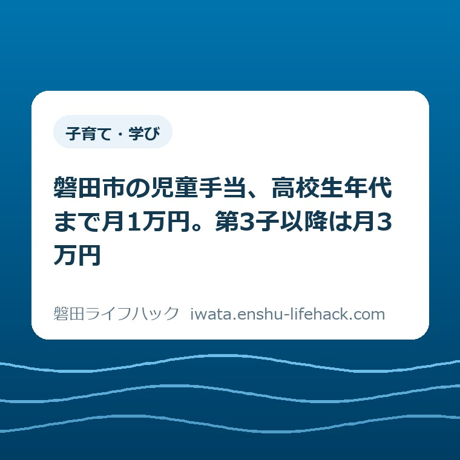

更新：2026.08.31 子育て・学び
磐田市の児童手当、高校生年代まで月1万円。第3子以降は月3万円

この記事の要点
Q. 磐田市で高校生の子がいると、児童手当はいくらもらえますか？
A. 3歳から18歳到達後最初の3月31日までは月1万円、第3子以降は月3万円です（磐田市「児童手当」2026年8月27日確認）。ただし振込は毎月ではなく年6回、2か月分ずつ。月1万円なら偶数月の10日に2万円が入ります。
導入——高校生の子がいる家に、月1万円
磐田市に住み、高校生年代の子を養育している家庭には、児童手当が月額10,000円支給されます。磐田市の「児童手当」のページには、支給の対象を「18歳到達後最初の3月31日までの子」と書いてあります（2026年8月27日確認）。
金額そのものより先に押さえたいことが二つあります。振り込まれるのが毎月ではないこと、そして「第3子以降は月3万円」の第3子が、多くの人の想像とは違う数え方をされることです。
この記事は制度の紹介ではありません。磐田市が公表している数字を、高校生年代の子がいる一世帯の家計と段取りに置き換えるとどう見えるかを書きます。手続きそのものの順番は、当サイトの児童手当の申請と期限を整理したページにまとめてあります。
私は磐田市で不動産業をしています。相談の場で家計の話になると、入ってくるお金の「時期」を取り違えている例に何度も出会います。月1万円という表記は、その取り違えが起きやすい書き方です。

まず、公式資料から事実を整理する
磐田市の「児童手当」のページ（2026年2月5日更新）には、支給月額が年齢の区分ごとに書かれています。0歳から2歳までが15,000円、3歳から18歳到達後最初の3月31日までが10,000円です。
第3子以降の扱いは別建てになっています。同じページに「0歳から22歳到達後最初の3月31日までの子が3人以上いる場合、第3子以降の支給対象児童の支給額は30,000円です」と記載されています。
支給の時期は年6回です。10月に8月分と9月分、12月に10月分と11月分というように、偶数月に2か月分をまとめて支給する形が示されています。支払日は支給期の10日で、土曜・日曜・祝日にあたる場合は直前の平日になります。
手続きの期限も明記されています。「転入・出生など異動があった場合は、15日以内に申請をしてください」というのが磐田市の記載です。公務員の場合は市ではなく勤務先へ申請する扱いになります。
窓口はこども未来課の給付グループで、iプラザ（総合健康福祉会館）3階にあります。電話は0538-37-4896、受付時間は午前8時30分から午後5時15分までです。
現況届については、令和4年度から原則不要になったと書かれています。例外は残っていて、離婚協議中で配偶者と別居している方や、経済的な負担をしている子を3人以上養育している方などは、毎年6月1日から6月末日までに提出が必要です。
月1万円は、毎月は振り込まれない
児童手当は毎月振り込まれる手当ではありません。磐田市の支給期は10月・12月・2月・4月・6月・8月の年6回で、それぞれ直前の2か月分がまとめて支払われます。
月額10,000円の家庭であれば、通帳に記帳されるのは1回20,000円です。第3子以降で月額30,000円なら1回60,000円になります。家計の側から見ると、毎月の収入が1万円増えるのではなく、偶数月の10日に2万円が入る形です。
この差は、月々の支払いに手当をあてにする計画を立てたときに効いてきます。塾の月謝や通学定期の引き落としが奇数月にもあるなら、手当が入る月と出ていく月がずれます。ずれること自体は問題ではありませんが、ずれを知らずに組んだ計画は途中で崩れます。
磐田市のページには、もう一つ見落としやすい記載があります。「児童手当では、8月分から翌年7月分までが『1年度』です」という一文です。学校の年度とも、市の会計の年度とも違う区切りになっています。この一行を読み落とすと、現況届の時期や年度の切り替えの説明が噛み合わなくなります。
「第3子以降は月3万円」の第3子を、どう数えるか
第3子以降の月額30,000円は、児童手当を受け取っている子の人数で決まるわけではありません。磐田市のページには、0歳から22歳到達後最初の3月31日までの子が3人以上いる場合、と書かれています。
磐田市は、この数え方の具体例をページに載せています。20歳の子、高校2年生、小学4年生を養育している場合、20歳の子は支給の対象ではないものの第1子として数えます。高校2年生が第2子で月額10,000円、小学4年生が第3子で月額30,000円になります。
この例が示しているのは、支給の対象から外れた上の子が、下の子の金額を押し上げるという構造です。大学生の長子が家にいるかどうかで、末子の手当が1万円か3万円かに分かれます。差は月2万円、年間で24万円です。
私が意外に感じたのはここです。手当の話は「対象になる子が何人いるか」で考えるのが自然ですが、実際には「22歳年度末までの子が家に何人いるか」で決まります。数える範囲のほうが、もらえる範囲より広いということです。
逆から見れば、上の子が22歳到達後最初の3月31日を過ぎた時点で、下の子の第3子加算は外れます。長子が就職して家を出る時期と、下の子の手当が減る時期が重なる家庭は、磐田市内にも一定数あるはずです。ここは事前に知っておくほど痛みが小さくなる部分です。

磐田の家計に置き換える——3年で36万円
高校生年代の3年間で受け取る金額は、月額10,000円なら合計360,000円になります。第3子以降にあたり月額30,000円であれば1,080,000円です。ここでは12か月×3年＝36か月として計算しています。
磐田市が公表している令和8年7月末現在の人口は163,224人、世帯数は72,421世帯です（磐田市「磐田市の人口 令和8年度」2026年8月17日更新）。年齢別の表では、15歳が1,555人、16歳が1,639人、17歳が1,609人となっています。
15歳から17歳を単純に足すと4,803人です。これは私が公表値を合算した計算値であり、市が「高校生年代」として集計した数字ではありません。それでも、市内におよそ4,800人規模の対象がいるという目安にはなります。
数字は自分の商売の感覚に翻訳しないと動きません。私の感覚で言うと、36万円は、実家の家財を処分して簡単な片づけを業者に頼んだときに動く金額の水準です。これは相場の提示ではなく、規模感を伝えるための私の見方だと受け取ってください。
家計の側から見れば、36万円は制服・教科書・通学定期・部活動費のうち、どれか一つを丸ごと吸収できるかどうかという規模です。学校にかかる費用そのものが不安な場合は、就学援助と学校費用の相談先を整理したページを先に見たほうが早いこともあります。
あわせて確認しておきたいのが、こども医療費です。磐田市のこども医療費は0歳から18歳到達後最初の3月31日までが対象で、通院・入院とも無料と書かれています（2026年6月15日更新）。手当と医療費で、高校生年代という区切りがそろっています。両方をまとめて見るなら、児童手当とこども医療費を並べて確認するページが使えます。
申請が要る家と、要らない家
すでに児童手当を受給している家庭は、子が高校生年代になったからといって改めて申請する必要はありません。手続きが要るのは、家族の構成や住所が動いたときです。
磐田市が示している具体例のひとつが、きょうだいが増えた場合です。市のよくある質問には、受給中に新たに子が生まれたときは「額改定認定請求書」の提出が必要で、出生日の翌日から15日以内にこども未来課または各支所市民生活課で申請するように書かれています。
転入したときも同じです。磐田市へ引っ越してきた場合、前の市区町村での受給がそのまま続くわけではありません。15日以内という期限が、ここでも効いてきます。引っ越しの荷ほどきをしている間に過ぎてしまう長さです。
離婚してひとり親になった場合は、子と同居する親権者が新たに申請する必要があると市のページに書かれています。状況の確認が要るため、まずこども未来課へ問い合わせるようにという案内になっています。
窓口はiプラザ3階のこども未来課ですが、福田・竜洋・豊田・豊岡の各支所市民生活課でも受け付ける手続きがあります。磐田市は南北27.1キロある市です。市役所と四つの支所から暮らしの距離を測った記事にも書いたとおり、どちらへ行くかで往復の時間はまったく変わります。用件が支所で済むかどうかは、市役所・支所・出張所の取扱業務をまとめたページと電話で先に確かめてください。
評価——良い点と、注文したい点
良い点は三つあります。第一に、支給月と支払日が具体的に書かれていることです。「支給期の10日、土曜・日曜・祝日なら直前の平日」まで書いてあれば、家計の側で予定を組めます。
第二に、第3子の数え方に具体例が付いていることです。20歳・高校2年生・小学4年生という並べ方は、制度の説明文を10行読むより早く理解できます。行政の文章としては手厚いほうだと私は見ています。
第三に、現況届が原則不要になったことと、例外がどういう人かを列挙していることです。「原則不要」で終わらせず、提出が必要な6つのケースを並べている点は評価できます。原則だけ示して例外を隠す書き方が、いちばん現場を混乱させます。
その上で、注文したい点も二つあります。一つは、所得による線引きの有無がページから読み取れないことです。磐田市の児童手当ページには「所得」という語が一度も出てきません。
国の側では、こども家庭庁が「所得によらず、支給の対象となります」と明記しています。撤廃されたから市のページに書いていないのだろうと私は考えていますが、これは推測です。所得で外れるかもしれないと思い込んで読むのをやめる家庭が出ないか、そこが気になっています。
もう一つ注文したい点は、いま高校生年代の子だけを養育している家庭が何をすればよいのかが、独立した項目になっていないことです。転入・出生の15日以内という記載はありますが、中学生までの受給歴がない家の入口が見えません。これは仕組みへの注文であって、窓口の担当者への注文ではありません。
対案・結論——入金の時期と、数える範囲を先に確かめる
結論として提案したいのは、金額を確かめる前に、入金の時期と第3子の数え方を確認することです。この二つを取り違えたまま計画を立てると、あとで必ず調整が要ります。
最初にやるのは通帳の確認です。直近の偶数月の10日前後に児童手当の入金があるかどうかを見ます。あれば受給中、なければ受給していないか、登録している口座が別かのどちらかです。
次に、家にいる子の年齢を「22歳到達後最初の3月31日まで」という線で数え直します。就職していても学生でも、その線の内側にいるなら人数に入ります。3人以上いれば、第3子以降の月額が変わる可能性があります。
最後に、疑問が残ったらこども未来課の給付グループ（0538-37-4896）へ電話します。窓口へ行く前に電話で確かめれば、必要な書類と、支所で済むかどうかが分かります。往復1時間の移動を一度減らせれば、それだけで手間の元は取れます。
同じ市役所の手続きでも、児童手当のように申請して受け取るものと、申請なしで市の側から届くものがあります。国民健康保険の資格確認書は後者で、毎年7月31日に期限が切れ、8月1日に一斉更新されます。手元の紙がいつ切れるかは磐田市の資格確認書は申請不要という記事に整理しました。子の分の保険の紙も、同じ夏に切り替わります。
0歳から2歳までの月額15,000円を受け取っている時期は、保育園や認定こども園の入園を考える時期とも重なります。園の選び方と、0〜2歳では施設の種類で手続きが変わらないことは磐田市の保育園と認定こども園の違いを整理した記事にまとめました。
確認する順番
- 直近の偶数月の10日前後の通帳を見て、児童手当の入金があるかどうかを確かめる。
- 入金がある場合は、金額が10,000円の2か月分か、30,000円の2か月分かを見る。
- 家にいる子を、22歳到達後最初の3月31日までという線で数え直し、3人以上いるかを確認する。
- 転入・出生・離婚など、この1年に家族の構成が動いた出来事がなかったかを振り返る。
- 不明点をメモにまとめ、こども未来課の給付グループ（0538-37-4896）へ電話して、必要な書類と受付窓口を確かめる。
家族で共有するための記録
確認した内容は、頭の中に置かず、一枚の紙か共有できるファイルに残してください。子の名前と生年月日、第何子として数えられるか、いま受け取っている月額、この三つが並んでいれば十分です。
記録を残す理由は、上の子が22歳年度末を越える時期が、家によって違うからです。その日を境に下の子の月額が変わる可能性があるなら、いつ来るのかを書いておいたほうが、家計の見直しが後手に回りません。
確認日も必ず書き添えてください。制度の内容も市の記載も変わります。今日確認したという事実が残っていれば、次に見直すときに何を読み直せばよいかがすぐ分かります。
離れて住む家族に説明するときも、この記録があると話が早くなります。月額、入金の時期、数えている子の人数。この三つが伝われば、遠方からでも判断に加われます。
大石の視点
ここから先は、私が現場で見てきたことをもとにした見解です。特定の家庭の体験談ではなく、不動産の相談を受けている人間の意見として読んでください。
実家じまいや相続の相談で家計の話に入ると、収入の「額」は覚えているのに「入る時期」を覚えていない方がとても多いです。児童手当のように偶数月にまとめて入る収入は、その典型だと私は考えています。
制度としては、高校生年代まで対象が広がったことも、第3子以降が月3万円になったことも、家計への効き方が素直で分かりやすいと思います。使う側が動きさえすれば、ちゃんと届く形になっています。
私が引っかかるのは、届くかどうかが「知っているかどうか」で決まる部分が残っていることです。22歳の子を人数に数えるという一点を知らないだけで、月2万円の差に気づかない家庭が出ます。制度は知っている人だけが得をする、という形が私はいちばん良くないと思っています。
今日できるのは、通帳を一度開くことと、家にいる子を22歳年度末までの線で数え直すことです。結論を急ぐ必要はありません。判断の材料が一つ増えた状態で、次に市のページを開けば十分です。
まとめ
磐田市の児童手当は、3歳から18歳到達後最初の3月31日までが月額10,000円、0歳から2歳までが月額15,000円、第3子以降にあたる子が月額30,000円です。支給は偶数月に2か月分ずつ、年6回にまとめられています。
第3子の数え方は、0歳から22歳到達後最初の3月31日までの子が3人以上いるかどうかで決まります。金額だけを見て納得せず、数える範囲を確かめてください。
- 高校生年代は月額10,000円。第3子以降なら月額30,000円で、3年間の差は72万円になる。
- 振込は毎月ではなく偶数月の10日。月額10,000円なら1回の入金は20,000円。
- 第3子は「22歳到達後最初の3月31日までの子が3人以上」で判定する。支給対象外の上の子も数える。
よくある質問
磐田市で高校生年代の子がいると、児童手当は月いくらですか。
磐田市の児童手当は、3歳から18歳到達後最初の3月31日までの子について月額10,000円です。0歳から2歳までは月額15,000円で、第3子以降にあたる子は年齢を問わず月額30,000円になります。金額は磐田市「児童手当」のページに掲載されています（2026年8月27日確認）。個別の該当可否はこども未来課へご確認ください。
第3子以降の月3万円は、どういう家庭が対象ですか。
磐田市のページには、0歳から22歳到達後最初の3月31日までの子が3人以上いる場合に、第3子以降の支給対象児童が月額30,000円になると書かれています。手当の対象から外れた上の子も人数に数えます。市が示す例では、20歳の子・高校2年生・小学4年生の家庭で、小学4年生が月額30,000円です。
児童手当はいつ振り込まれますか。毎月ですか。
毎月ではありません。磐田市の支給期は10月・12月・2月・4月・6月・8月の年6回で、それぞれ直前の2か月分をまとめて支給します。支払日は支給期の10日で、土曜・日曜・祝日にあたる場合は直前の平日です。月額10,000円の家庭であれば、1回の入金は20,000円になります。
参考にした公式情報
- 児童手当／磐田市（2026年8月27日確認・ページ更新日2026年2月5日）
- 子育てに関する手当・助成／磐田市（2026年8月27日確認）
- こども医療費／磐田市（2026年8月27日確認・ページ更新日2026年6月15日）
- 児童手当を受給していますが、新たに子どもが生まれました。申請は必要ですか。／磐田市（2026年8月27日確認）
- 磐田市の人口 令和8年度／磐田市（2026年8月27日確認・ページ更新日2026年8月17日）
- 子育て世帯の家計を応援／こども家庭庁（2026年8月27日確認）
最終確認日：2026-08-27 ／ 本記事は公表情報と執筆者の見解を分けて記載しています。制度・数値・公開状況は変更される場合があるため、最新情報は磐田市公式ページでご確認ください。支給の可否や金額は世帯ごとの状況によって変わります。個別の判断はこども未来課給付グループ（0538-37-4896）へご確認ください。